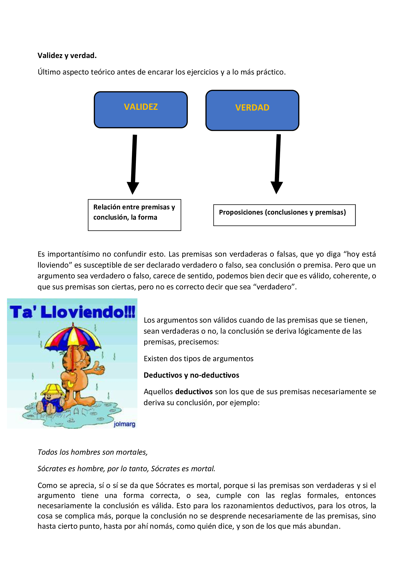

Argumentos deductivos:
Todos los hombres son mortales, Sócrates es hombre, por tanto, es mortal.
Sus premisas son verdaderas (los hombres son mortales, y Sócrates es hombre) y es válido, porque la conclusión se deriva necesariamente de las premisas. Cuando un argumento tiene premisas verdaderas y es válido, se dice que es sólido.
Todos los hombres son rusos. Sócrates es hombre. Por tanto, Sócrates es ruso.
Acá también es deductivo, y válido, porque la conclusión también se deriva de las premisas necesariamente, solo que una de ellas es falsa, a saber: todos los hombres son rusos. La conclusión también es falsa.
Todos los hombres son griegos. Sócrates es hombre. Por tanto, Sócrates es griego.
Acá la conclusión es verdadera, y el proceso de razonamiento es válido, pero una premisa es falsa, “todos los hombres son griegos”, por lo que no es sólido, solo válido, con conclusión verdadera.
Las plantas necesitan agua para vivir.
Las rosas son plantas.
Las rosas necesitan agua para vivir.
Y así uno puede combinar argumentos, premisas verdaderas con conclusiones falsas, o estas verdaderas con premisas falsas, o todo falso, o todo verdadero, como sea, la lógica se encarga de la forma y las ciencias, de estudiar que lo que afirman o niegan las proposiciones sea verdadero.
Argumentos no-deductivos:
Serían de dos tipos, inductivos o analógicos. También hay otra clasificación, los abductivos, pero por motivos prácticos y de enfoque solo lo definiremos someramente.
El argumento abductivo es aquel que establece una hipótesis (sugiere que algo puede ser o no) a partir de la correlación de alguna característica en común de los enunciados. Ej:
Ayer compré cinta aisladora y la dejé encima de la mesa del comedor. Hoy llegué y vi a mi gato arriba de la mesa y a la cinta tirada. Conclusión: es posible que el gato me haya tirado la cinta (hipótesis)
Inductivos:
Tienden de ir de lo más particular a lo más general. Son aquellos de los cuales la conclusión no se deriva sí o sí de las premisas, sino solo en cierto grado.
Ejemplos:
“Casi todos los fumadores de larga duración acaban padeciendo enfermedades pulmonares. Juan es un fumador de larga duración. Por tanto, seguramente Juan padecerá una enfermedad pulmonar.”
De seguro ustedes más de una vez escucharon un argumento del tipo "pfff que va generar cáncer, si mi abuelo de campaña con 80 años fuma y está lo más sano" Bueno, eso también es un argumento inductivo, muy pueril, claro está, porque los casos en que sucede eso son mínimos y a partir de ellos se saca una conclusión general, que encima, contradice a toda la ciencia.
"Todos los cuervos observados son negros. Por tanto, todos los cuervos son negros."
"Una joven en bicicleta pasó un semáforo en rojo.
Un joven en bicicleta pasó un semáforo en rojo.
Todos los jóvenes en bicicleta pasan los semáforos en rojo."
Como se aprecia en los tres ejemplos, la conclusión se deriva de casos particulares, “todos los cuervos observados” o la joven y el joven que pasaron en bicicleta, y a partir de ahí se dice: bueno si varios son de cierta forma o hacen algo, por tanto el resto de la misma especie o tipo, también son así.
¿Cuántos casos particulares son precisos para darle fuerza, que sea fuerte, un argumento? Y… cuantos más mejor, no es lo mismo decir que al ver 3 patos ya afirmo que todos los patos tienen dos patas, que viendo 30, o 300 o 3000, la conclusión, a mayor cantidad de casos observados, más fuerza tendrá, y más difícil es que aparezca un caso que contradiga lo dicho
Analógicos: El argumento analógico es aquél en el que a partir de la semejanza establecida en las premisas entre dos o más objetos en uno o más aspectos, se concluye la similitud de otro u otros objetos (sin pretender abarcar la totalidad) en algún otro aspecto, sobre la base de que todos los objetos comparados poseen algo en común.
1)Las películas “Dogville”, “Manderlay”, “Bailando en la obscuridad” y “Melancolía” son del director Lars von Trier.
2) Las películas “Dogville”, “Manderlay” y “Bailando en la obscuridad” tienen guiones muy interesantes.
Por lo tanto, probablemente “Melancolía” tenga un guión muy interesante.
Otro ejemplo:
Las manzanas, bananas y peras son frutas,
Las manzanas y bananas son dulces.
Por lo tanto, es posible que la banana también sea dulce.